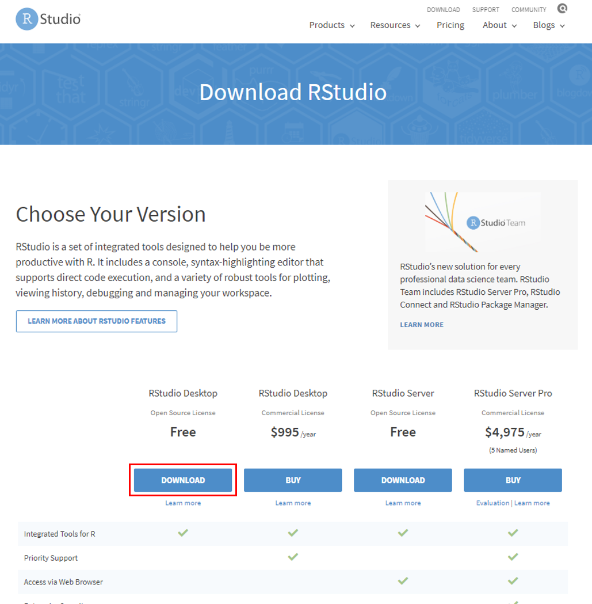
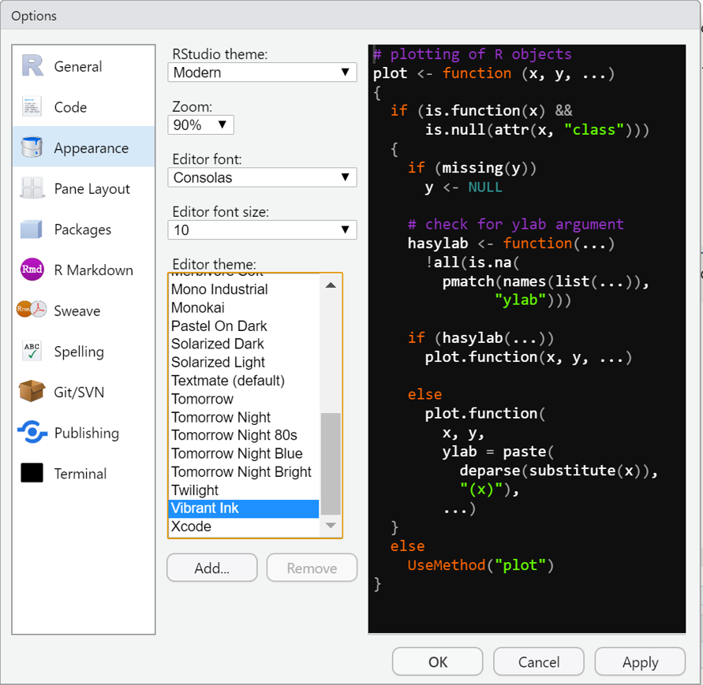

1.4 RStudio
- RStudio: R 통합 분석/개발 환경(integrated development environment, IDE)으로 현재 가장 대중적으로 사용되고 있는 R 사용 환경
- 명령 곤솔 외 파일 편집, 데이터 객체, 명령 기록(.history), 그래프 등에 쉽게 접근 가능
- RStudio 독자적인 개발 환경 제공: Rmarkdown, Rnotebook, Shiny Web Application 등 다양한 R 환경을 제공
- 버전관리(git, subversion)를 통해 project 관리 가능
- 무료 및 유료 소프트웨어 제공
1.4.1 RStudio 설치하기
- 웹 브라우저를 통해 https://rstudio.com 접속 후 상단 DOWNLOAD 링크 클릭

Desktop 또는 Server 버전 중 택일
- 서버용 설치를 위해서는 Server 클릭 \(\rightarrow\) 소규모 자료 분석용으로는 불필요
- 여기서는 Desktop 버전 선택 후 다음 링크로 이동

- 운영체제에 맞는 Rstudio installer 다운로드(여기서는 Windows 버전 다운로드)

- RStudio installer 다운로드 시 파일이 저장된 폴더에서 보통
RStudio-xx.xx.xxx.exe형식의 파일명 확인- 더블 클릭 후 실행
- [다음>] 몇 번 클릭 후 설치 종료

- 바탕화면 혹은 시작 프로그램에 새로 설치된 RStudio 아이콘 클릭 후 아래와 같은 프로그램 창이 나타나면 설치 성공
1.4.2 RStudio IDE 화면 구성
RStudio는 아래 그림과 같이 4개 창으로 구성3
1. 콘솔(console)
- R 명령어 실행공간(RGui, 정확하게는 R 설치 디렉토리에서 “~/R/R.x.x/bin/x64/Rterm.exe” 가 구동되고 있는 공간)
- R script 또는 콘솔 창에서 작성한 명령어(프로그램) 실행 및 그 결과 출력
- 경고, 에러/로그 등의 메세지 확인

Figure 1.4: RStudio 콘솔창에서 명령어 실행 후 출력결과 화면
2. 스크립트(script) (Figure 1.5)
- R 명령어 입력 공간으로 일괄처리(batch processing) 가능
- 새로운 스크립트 창 열기
- 아래 그림과 같이 pull-down 메뉴 좌측 상단 아이콘 클릭 후 [R script] 선택
[File]\(\rightarrow\)[New File]\(\rightarrow\)[R Script]선택- 단축 키:
[Ctrl] + [Shift] + [N]
- 일괄 명령어 처리를 위한 RStudio 제공 단축 키
[Ctrl] + [Enter]: 선택한 블럭 내 명령어 실행[Alt] + [Enter]: 선택 없이 커서가 위치한 라인의 명령어 실행
- R 스크립트 이외 R Markdown, R Notebook, Shiny web application 등 새 문서의 목적에 따라 다양한 종류의 소스 파일 생성 가능
- 저장된 R 스크립트 파일은
파일명.R로 저장됨 - 파일 실행 방법
- 실행하고자 하는 파일을 읽은 후(
[File]\(\rightarrow\)[Open File]+ 파일명 선택 또는파일명.R더블 클릭) 입력된 모든 라인을 선택한 뒤[Ctrl] + [Enter] - 파일 읽은 후
[Ctrl] + [Shift] + [S](현재 열려있는*.R파일에 대해) 또는[Ctrl] + [Shift] + [Enter]
- 실행하고자 하는 파일을 읽은 후(
Figure 1.5: RStudio 스크립트 새로 열기
RStudio는 코딩 및 소스 작성의 효율성을 위해 여러 가지 단축 키를 제공하고 있음. 단축키는 아래 그림과 같이 pull down 메뉴 [Tools] 또는 [Help]에서 [Keyboard shortcut help] 또는 [Alt] + [Shift] + [K] 단축키를 통해 확인할 수 있음. 또는 Rstudio cheatsheet에서 단축키에 대한 정보를 제공하는데 pull down 메뉴 [Help] \(\rightarrow\) [Cheatsheets] \(\rightarrow\) [RStudio IDE Cheat Sheet]을 선택하면 각 아이콘 및 메뉴 기능에 대한 개괄적 설명 확인 가능함.
3. 환경/명령기록(Environment/History) (Figure 1.6)
- Environment: 현재 R 작업환경에 저장되어 있는 객체의 특성 및 값 등을 요약 제시
- 좌측 아래 화살표 버튼 클릭: 해당 객체의 상세 정보 확인
- 우측 사각형 버튼 또는 객체(데이터셋명) 클릭: 객체가 데이터셋(데이터프레임)인 경우 스프레드 시트 형태로 데이터셋 확인

Figure 1.6: RStudio Environment 창 객체 상세 정보 및 스프레드 시트 출력 결과
- History: R 콘솔에서 실행된 명령어(스크립트)들의 이력 확인

4. File/Plots/Packages/Help/Viewer
- File: Windows 파일 탐색기와 유사한 기능 제공
- 파일 및 폴더 생성, 삭제/파일 및 폴더명 수정, 그리고 작업경로 설정

- Plots: 생성한 그래프 출력
- 작업 중 생성한 그래프 이력이 Plots 창에 저장: \(\leftarrow\) 이전, \(\rightarrow\) 최근
Zoom: 클릭 시 해당 그래프의 팝업창이 생성되고 팝업창의 크기 조정을 통해 그래프의 축소/확대 가능Export: 선택한 그래프를 이미지 파일(.png,.jpeg,.pdf등)로 저장할 수 있고, 클립보드로 복사 가능

- Packages: 현재 컴퓨터에 설치된 R 패키지 목록 출력
- 신규 설치 및 업데이트 가능

- Help:
help(topic)입력 시 도움말 창이 출력되는 공간

1.4.3 RStudio 환경 설정
Pull-down 메뉴에서 [Tools] \(\rightarrow\) [Global Options...]를 선택
General: RStudio 운용 관련 전반적 설정 세팅

- R version: 만약 컴퓨터에 두 개 이상 다른 R 버전이 설치되어 있는 경우
[Change]클릭 후 설정 변경 가능 - Default Working directory: 작업 디렉토리 지정([
Browse] 클릭 후 임의 폴더 설정 가능) - Restore most recently opened project at startup: RStudio 실행 시 가장 최근에 작업한 프로젝트로 이동
- Restore previously open source documents at startup: RStudio 실행 시 현재 프로젝트에서 가장 최근에 작업한 소스코드 문서를 함께 열어줌.
- Restore .RData into workspace at startup: 작업 디렉토리에 존재하는
.RData파일을 RStudio 실행 시 불러옴 - Save workspace to .RData on exit: R workspace 자동 저장(
.RData) 여부 - Always save history (even when not saving .RData) : R 실행 명령 history 저장 여부(Always/Never/Ask)
- Remove duplicate entries in history: history 저장 시 중복 명령 제거 여부
Code: Editing: 들여쓰기, 자동 줄바꿈 등 코드 편집에 대한 전반적 설정
- Insert spaces for tab:
[Tab]키를 눌렀을 때 공백(space) 개수 결정(본 강의노트:Tab width = 4) - Auto-detect code indentation: 코들 들여쓰기 자동 감지
- Insert matching parens/quotes: 따옴표, 괄호 입력 시 커서를 따옴표/괄호 사이로 자동 이동
- Auto-indent code after paset:
- Vertically align arguments in auto-indent:
- Soft-wrap R source file:
- Continue comment when inserting new line:
- Surround selection on text insertino:
- Focus console after executing from source:
Code: Display: 스크립트(소스) 에디터 표시 화면 설정

- Highlight selected word:
- Highlight selected line:
- Show line numbers:
- Show margin:
- Show whitespace characters:
- Show indent guides:
- Blinking cursor:
- Show syntax highlighting in console output:
- Allow scroll past end of document:
- Allow drag and drop of text:
- Highlight R function calls:
Code: Saving: 스크립트(소스) 에디터 저장 설정
- Ensure that source file end with newline:
- String trailing horizontal whitespace when saving:
- Restore last cursor position when opening file:
- Default text encoding:
Appearance: RStudio 전체 폰트, 폰트 크기, theme 설정

Pane Layout: RStudio 구성 패널들의 위치 및 항목 등을 수정/추가/삭제(4개 페널은 항시 유지)
각 창의 위치는 세팅 구성에 따라 달라질 수 있음. 창 구성 방법은 RStudio 환경 옵션 설정에서 설명함.↩